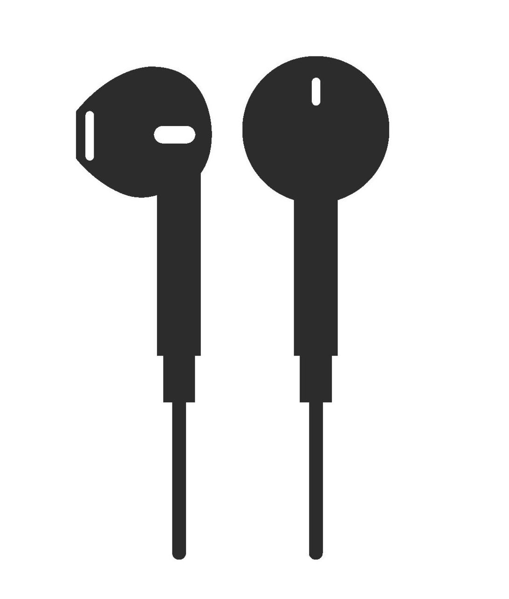

<!DOCTYPE html>
<html>
  <head>
    <title>Looming Study</title>
    <!-- load required plugins from jspsych library -->
    <script src="jsPsych/jspsych.js"></script>
    <script src="jsPsych/plugins/jspsych-html-keyboard-response.js"></script>
    <script src="jsPsych/plugins/jspsych-image-keyboard-response.js"></script>
    <script src="jsPsych/plugins/jspsych-audio-keyboard-response.js"></script>
    <script src="jsPsych/plugins/jspsych-preload.js"></script>
    <link href="jsPsych/css/jspsych.css" rel="stylesheet" type="text/css">
  </head>
  <body></body>

  <script>

/* Initialise variables */

    var timeline = []; //create empty timeline variable
    var repeat_hp = false; //for headpone task
    var hp_count = 1; //for headphone task
    var random = 0; //for test procedure
    var n_corr = 3;

/* !NOTE: The whole experiment could be divided into several blocks. The following code follows the same breakdown into
experimental blocks. The end of the code calls each of the code blocks in the order of the experiment. e.g. Instruction blocks,
followed by headphone screening, practice trials etc. The start of each code block is labelled appropriately in order and in
the context of the experiment */

  /* 1. Instruction blocks */

    var instructions_0 = { //Welcome page
            type: 'html-keyboard-response',
            stimulus: `
                <p style="font-size:25px"><strong>Welcome to the experiment</strong></p>
                <p style="line-height:5">Press any key to proceed</p>
            `,
            post_trial_gap: 1000
        };

    var instructions_1 = { //Introduction to headphone screening task
            type: 'html-keyboard-response',
            stimulus: `
                <p style="font-size:25px"><strong>Welcome to the experiment</strong></p>
                <p>You are required to wear your earphones/headphones for this study</p>
                <p>You will be doing a earphone/headphone screening task before proceeding to the actual task</p>
                <p>Please make sure you have no other tabs open</p>
                <p style="line-height:5">Press any key to proceed</p>
            `,
            post_trial_gap: 1000
        };

    var instructions_2 = { //Wear your headphones instructions
            type: 'html-keyboard-response',
            stimulus: `
                 <p></p>
                 <p><strong>please wear your headphones</strong></p>
                 <p>Press any key to proceed once you are ready</p>
            `,
            post_trial_gap: 1000
        };
    
    var instructions_3 = { //Headphone volume adjustment prompt
            type: 'html-keyboard-response',
            stimulus: `
                 <p>Please set your earphone/headphone volumes to atleast 15% of the max volume</p>
                 <p>Adjust later until audio is at a comfortable level</p>
                 <p style="line-height:8">Press any key to proceed</p>
            `,
            post_trial_gap: 1000
        };

    var instructions_4 = { //Breifing for headphone screening task
            type: 'html-keyboard-response',
            stimulus: `
                 <p style="font-size:25px"><strong>Welcome to the headphone screening task</strong></p>
                 <p>You will now hear three tones played in succession</p>
                 <p>Please <strong>choose 1, 2, or 3 to indicate which of the three tones was the softest to hear</strong></p>
                 <p> For example, if the second tone was the softest to hear, press "2"</p>
                 <p style="line-height:5">Press any key to proceed</p>
            `,
            post_trial_gap: 1000
        };    

    var instructions_5 = { //Move to actual experiment instruction
            type: 'html-keyboard-response',
            stimulus: `
                <p>Now let's move to the actual experiment</p>
                <p>Press any key to proceed to the instructions</p>
            `,
            post_trial_gap: 1000
        };    
        
    var instructions_6 = { //Instructions for actual experiment
            type: 'html-keyboard-response',
            stimulus: `
                 <p style="font-size:30px"><strong>Instructions</strong></p>
                 <p>It's the year 2030</p>
                 <p>You are invited to name the extra terrestials discovered by our scientists as part of the SpaceX Mars Mission</p>
                 <p>An image of the aliens will be shown first along with the sound it makes</p>
                 <p>After this, two names would be presented at either sides of the screen</p>
                 <p>Press <strong>'F'</strong> to choose the name on the left, and <strong>'J'</strong> to choose the name on the right</p>
                 <p>Please read out the names in your mind and choose which one seems to fit best with the alien displayed</p>
                 <p style="line-height:8">Press any key to proceed</p>
            `,
            post_trial_gap: 1000
        };   

    var instructions_7 = { //Practice trial intro
            type: 'html-keyboard-response',
            stimulus: `
                <p>First let's do three practice trials</p>
                <p>Please use these trials to also calliberate your headphone volume</p>
                <p>Press any key to proceed</p>
            `,
            post_trial_gap: 1000
        };   
   
    var instructions_8 = { //Actual task intro
            type: 'html-keyboard-response',
            stimulus: `
                <p>Now let's hit the actual task</p>
                <p>Good luck! Press any key to proceed</p>
            `,
            post_trial_gap: 1000
        };   

  /* End of instructions block */

  /* 2. Headphone screening block */
    
    //Preload stimulus to prevent lag
    var preload_screen = {
            type: 'preload',
            audio: audio_screen,
            show_preload_progress_bar: true,
            message: 'Loading media'
        };

    var audio_screen = [ "jsPsych/screening/ios.wav",
                        "jsPsych/screening/iso.wav",
                        "jsPsych/screening/soi.wav"
    ]
    
    //Task procedure
    var hp_procedure = {
    //create timeline for headphone screening task
    timeline: [
        {//Ready screen 
            type: 'html-keyboard-response',
            stimulus: '<div style="font-size:25px;">Ready</div>',
            choices: jsPsych.NO_KEYS,
            trial_duration: 1000 //1000ms duration
        },
        {//Play tones for headphone screening task
          type: 'audio-keyboard-response',
          stimulus: jsPsych.timelineVariable('sound'),
          prompt: `<p></p>`,
          choices: jsPsych.NO_KEYS,
          trial_duration: 4100
        },
        {//Ask question: 'Which tone was softest?'
            type: 'html-keyboard-response',
            stimulus: '<div style="font-size:25px;">Which tone was the softest? 1, 2 or 3?</div>',
            data: {
            task: 'response',
            correct: jsPsych.timelineVariable('correct')
        },
          choices: ['1', '2', '3'],
          post_trial_gap: 1000 //1000ms post trial gap
        },
    ],
    timeline_variables: [//define timeline variables and correct response
      { sound: "jsPsych/screening/ios.wav", correct: '1'},
      { sound: "jsPsych/screening/iso.wav", correct: '2'},
      { sound: "jsPsych/screening/soi.wav", correct: '3'}
    ],
    randomize_order: false, //randomize
    data: {
      correct_response: jsPsych.timelineVariable('correct'),
      task: 'screen' //define task name for saving data
    },
    on_finish: function(data){
    data.correct = data.response == data.correct_response; //find correct responses
    //jsPsych.pluginAPI.compareKeys(data.response, data.correct_response);
  }
};

    //Repeat task message if they don't get all correct
        var repeat_hp_message = {
            type: 'html-keyboard-response',
            stimulus: `
                      <p>You did not clear the screening task, please wear your headphones</p>
                      <p>Now you will have a chance to repeat the instructions and screening task again</p>
                      <p style="line-height:8">Press any key to proceed</p>
                      `
        };

    //Headphone task debrief
        var debrief_hp = {
            type: "html-keyboard-response",
            stimulus: function() {

            var last_prac = jsPsych.data.get().filter({task:'screen'}).last(2);
            n_corr = last_prac.filter({correct: false}).count();

            return `<p>You responded correctly on ${n_corr} trials.</p>
            <p>Press any key to proceed</p>`;
  }
};
    //Condition for repeating headphone screening - !! fix bug in this !!
        var repeat_hp_conditional = {
            timeline: [repeat_hp_message],
            conditional_function: function() {
              //var last_hp = jsPsych.data.get().filter({task:'screen'}).last(3); //!! bug location - not counting
              //n_corr = last_hp.filter({correct: true}).count();
                if (n_corr < 3 && hp_count == 1) {
                    repeat_hp = true;
                    hp_count = 1 + hp_count;
                    return true;
                } else {
                    repeat_hp = false;
                    return false;
                }
            }
        }

  //Headphone task flow

        var instructions_hp_loop = {
            timeline: [instructions_4, hp_procedure, debrief_hp, repeat_hp_conditional],
            loop_function: function() {
                if (repeat_hp == true) {
                    return true;
                } else {
                    return false;
                }
            }
        }

/* Rest block */
    var rest_block = {
      type: "html-keyboard-response",
      stimulus: `
      <p>Please take a 2 minute break before we move to the next half of the experiment</p>
      <p>The experiment will start immediately after 2 minutes</p>
      <p>You can also press any key to proceed once you're ready</p>
      `,
      trial_duration: 120000
      };

/* 3. Practice block */
//Preload practice stimulus 
    var practice_preload = {
            type: 'preload',
            images: practice_block,
            audio: audio_block,
            show_preload_progress_bar: true,
            message: 'Loading media'
    };

//Practice procedure
    var practice_procedure = {
      timeline: [
        {
            type: 'html-keyboard-response',
            stimulus: '<div style="font-size:60px;">+</div>',
            choices: jsPsych.NO_KEYS,
            trial_duration: function(){
            return jsPsych.randomization.sampleWithoutReplacement([500, 750, 1000, 1250, 1500, 1750, 2000], 1)[0];
            },
        },
        {
          type: 'audio-keyboard-response',
          stimulus: jsPsych.timelineVariable('sound'),
          choices: jsPsych.NO_KEYS,
          prompt: function(){
            return ``
          },
          trial_duration: 2100
        },
        {
          type: "image-keyboard-response",
          stimulus: jsPsych.timelineVariable('image'),
          stimulus_height: 400,
          prompt: function(){
                  return `<p style="text-align:left;">${jsPsych.timelineVariable('up_word')}
                   <span style="float:right;">${jsPsych.timelineVariable('down_word')}</span></p>
                   <p>Press <strong>"F"</strong> to choose the word in the left and <strong>"J"</strong> to choose the word in the right</strong>`
          },
          choices: ['f', 'j'],
            data: {
            task: 'practice',
            condition: jsPsych.timelineVariable('condition')
          },
      },
  ],
  timeline_variables: [
    { image: "jsPsych/prac/prac1.jpg", sound: "jsPsych/prac/aud1.mp3", up_word: "bumala", down_word: "dusara" },
    { image: "jsPsych/prac/prac2.jpg", sound: "jsPsych/prac/aud2.mp3", up_word: "tiparo", down_word: "dibuwo" },
    { image: "jsPsych/prac/prac3.jpg", sound: "jsPsych/prac/aud3.mp3", up_word: "talosu", down_word: "murasu" },
  ],
    randomize_order: true,
    /*sample: {
        type: 'without-replacement',
        size: 3, // 3 trials, without replacement
    }*/
};

/* Test procedure */

//Preload test stimulus
var preload = {
            type: 'preload',
            images: images_block,
            audio: audio_block,
            show_preload_progress_bar: true,
            message: 'Loading media'
        };

//Test Procedure
    var test_procedure = {
    timeline: [
        {
            type: 'html-keyboard-response',
            stimulus: '<div style="font-size:60px;">+</div>',
            choices: jsPsych.NO_KEYS,
            trial_duration: function(){
            return jsPsych.randomization.sampleWithoutReplacement([500, 750, 1000, 1250, 1500, 1750, 2000], 1)[0]; //random durations of fixation cross
            },
        },
        {
          type: 'audio-keyboard-response',
          stimulus: jsPsych.timelineVariable('sound'),
          choices: jsPsych.NO_KEYS,
          prompt: function(){
            return ``
          },
          trial_duration: 2100
        },
        {
          type: "image-keyboard-response",
          stimulus: jsPsych.timelineVariable('image'),
          stimulus_height: 400,
          prompt: function() {
            if (jsPsych.randomization.sampleWithoutReplacement([1, 2], 1)[0] == 1) {
                    random = 1;
                    return `<p style="text-align:left;">${jsPsych.timelineVariable('up_word')}
                            <span style="float:right;">${jsPsych.timelineVariable('down_word')}</span></p>`;
                } else {
                    random = 2;
                    return `<p style="text-align:left;">${jsPsych.timelineVariable('down_word')} 
                            <span style="float:right;">${jsPsych.timelineVariable('up_word')}</span></p>`;
                }
          },
          choices: ['f', 'j'],
            data: {
            task: 'test',
            condition: jsPsych.timelineVariable('condition'),
            random: random
          },
          on_finish: function(data) {
                var test = 'incongruent';
                if (data.response == 'f' && random == 1 && data.condition == 'up') {
                    test = 'congruent';
                }
                else if(data.response == 'f' && random == 2 && data.condition == 'down'){
                  test = 'congruent'
                }
                else if(data.response == 'j' && random == 1 && data.condition == 'down'){
                  test = 'congruent'
                }
                else if(data.response == 'j' && random == 2 && data.condition == 'up'){
                  test = 'congruent'
                }
                data.match = test;
            }
      },
  ],
    timeline_variables: [
{ image: "jsPsych/img/19_big.jpg", sound: "jsPsych/sound/roar_rev_-10.wav", condition: "up", up_word: "bupaba", down_word: "dugada" },
{ image: "jsPsych/img/05_big.jpg", sound: "jsPsych/sound/roar_-20.wav", condition: "down", up_word: "bibapo", down_word: "didago" },
{ image: "jsPsych/img/01_big.jpg", sound: "jsPsych/sound/roar_-10.wav", condition: "down", up_word: "babopu", down_word: "tatoku" },
{ image: "jsPsych/img/28_big.jpg", sound: "jsPsych/sound/roar_rev_10.wav", condition: "up", up_word: "pasa", down_word: "kaza" },
{ image: "jsPsych/img/11_big.jpg", sound: "jsPsych/sound/roar_10.wav", condition: "down", up_word: "mabo", down_word: "nago" },
{ image: "jsPsych/img/04_big.jpg", sound: "jsPsych/sound/roar_-15.wav", condition: "down", up_word: "mobapo", down_word: "nodago" },
{ image: "jsPsych/img/21_big.jpg", sound: "jsPsych/sound/roar_rev_-10.wav", condition: "up", up_word: "bobipu", down_word: "dodigu" },
{ image: "jsPsych/img/36_big.jpg", sound: "jsPsych/sound/roar_rev_5.wav", condition: "up", up_word: "mabapu", down_word: "nataku" },
{ image: "jsPsych/img/16_big.jpg", sound: "jsPsych/sound/roar_5.wav", condition: "down", up_word: "bobipa", down_word: "dodiga" },
{ image: "jsPsych/img/07_big.jpg", sound: "jsPsych/sound/roar_-5.wav", condition: "down", up_word: "pabapo", down_word: "katako" },
{ image: "jsPsych/img/30_big.jpg", sound: "jsPsych/sound/roar_rev_15.wav", condition: "up", up_word: "asofi", down_word: "azov" },
{ image: "jsPsych/img/35_big.jpg", sound: "jsPsych/sound/roar_rev_5.wav", condition: "up", up_word: "befosa", down_word: "kevoza" },
{ image: "jsPsych/img/15_big.jpg", sound: "jsPsych/sound/roar_20.wav", condition: "down", up_word: "bopa", down_word: "koga" },
{ image: "jsPsych/img/29_big.jpg", sound: "jsPsych/sound/roar_rev_10.wav", condition: "up", up_word: "besapa", down_word: "dezaga" },
{ image: "jsPsych/img/27_big.jpg", sound: "jsPsych/sound/roar_rev_-5.wav", condition: "up", up_word: "pafobu", down_word: "tavoku" },
{ image: "jsPsych/img/03_big.jpg", sound: "jsPsych/sound/roar_-15.wav", condition: "down", up_word: "bopo", down_word: "koto" },
{ image: "jsPsych/img/10_big.jpg", sound: "jsPsych/sound/roar_10.wav", condition: "down", up_word: "bafaso", down_word: "gavazo" },
{ image: "jsPsych/img/18_big.jpg", sound: "jsPsych/sound/roar_5.wav", condition: "down", up_word: "pafabi", down_word: "davagi" },
{ image: "jsPsych/img/12_big.jpg", sound: "jsPsych/sound/roar_15.wav", condition: "down", up_word: "bafapo", down_word: "davako" },
{ image: "jsPsych/img/25_big.jpg", sound: "jsPsych/sound/roar_rev_-20.wav", condition: "up", up_word: "mipaba", down_word: "nidaga" },
{ image: "jsPsych/img/24_big.jpg", sound: "jsPsych/sound/roar_rev_-20.wav", condition: "up", up_word: "bapafo", down_word: "katavo" },
{ image: "jsPsych/img/13_big.jpg", sound: "jsPsych/sound/roar_15.wav", condition: "down", up_word: "bepabo", down_word: "degado" },
{ image: "jsPsych/img/14_big.jpg", sound: "jsPsych/sound/roar_20.wav", condition: "down", up_word: "pasobi", down_word: "tazogi" },
{ image: "jsPsych/img/02_big.jpg", sound: "jsPsych/sound/roar_-10.wav", condition: "down", up_word: "pabu", down_word: " dagu" },
{ image: "jsPsych/img/32_big.jpg", sound: "jsPsych/sound/roar_rev_15.wav", condition: "up", up_word: "bofoba", down_word: "kovoka" },
{ image: "jsPsych/img/33_big.jpg", sound: "jsPsych/sound/roar_rev_20.wav", condition: "up", up_word: "asaba", down_word: "azaga" },
{ image: "jsPsych/img/22_big.jpg", sound: "jsPsych/sound/roar_rev_-15.wav", condition: "up", up_word: "mesabo", down_word: "nezago" },
{ image: "jsPsych/img/34_big.jpg", sound: "jsPsych/sound/roar_rev_20.wav", condition: "up", up_word: "bobapu", down_word: "kokatu" },
{ image: "jsPsych/img/06_big.jpg", sound: "jsPsych/sound/roar_-20.wav", condition: "down", up_word: "masa", down_word: "naza" },
{ image: "jsPsych/img/09_big.jpg", sound: "jsPsych/sound/roar_-5.wav", condition: "down", up_word: "mabapu", down_word: "nadaku" },
{ image: "jsPsych/img/23_big.jpg", sound: "jsPsych/sound/roar_rev_-15.wav", condition: "up", up_word: "bepaso", down_word: "tekazo" },
{ image: "jsPsych/img/26_big.jpg", sound: "jsPsych/sound/roar_rev_-5.wav", condition: "up", up_word: "besa", down_word: "teza" }
],
  //randomize_order: true
   sample: {
        type: 'without-replacement',
        size: 5, // 10 trials, without replacement for testing
    }
};

/* Debrief block */
var debrief_block = {
      type: "html-keyboard-response",
      stimulus: function(){
      return `
      <p>You will now be redirected to complete a small post-experiment survey</p>
      <p style="line-height:5">Press any key to proceed</p>
      `;
      }
    };

/* stimulus for experiment */

/* Images stimulus */
var images_block = [
'jsPsych/img/19_big.jpg',
'jsPsych/img/05_big.jpg',
'jsPsych/img/01_big.jpg',
'jsPsych/img/28_big.jpg',
'jsPsych/img/11_big.jpg',
'jsPsych/img/04_big.jpg',
'jsPsych/img/21_big.jpg',
'jsPsych/img/36_big.jpg',
'jsPsych/img/16_big.jpg',
'jsPsych/img/07_big.jpg',
'jsPsych/img/30_big.jpg',
'jsPsych/img/35_big.jpg',
'jsPsych/img/15_big.jpg',
'jsPsych/img/29_big.jpg',
'jsPsych/img/27_big.jpg',
'jsPsych/img/03_big.jpg',
'jsPsych/img/10_big.jpg',
'jsPsych/img/18_big.jpg',
'jsPsych/img/12_big.jpg',
'jsPsych/img/25_big.jpg',
'jsPsych/img/24_big.jpg',
'jsPsych/img/13_big.jpg',
'jsPsych/img/14_big.jpg',
'jsPsych/img/02_big.jpg',
'jsPsych/img/32_big.jpg',
'jsPsych/img/33_big.jpg',
'jsPsych/img/22_big.jpg',
'jsPsych/img/34_big.jpg',
'jsPsych/img/06_big.jpg',
'jsPsych/img/09_big.jpg',
'jsPsych/img/23_big.jpg',
'jsPsych/img/26_big.jpg'
                        ];

/* Audio stimulus */
    var audio_block = [
'jsPsych/sound/roar_rev_-10.wav',
'jsPsych/sound/roar_-20.wav',
'jsPsych/sound/roar_-10.wav',
'jsPsych/sound/roar_rev_10.wav',
'jsPsych/sound/roar_10.wav',
'jsPsych/sound/roar_-15.wav',
'jsPsych/sound/roar_rev_-10.wav',
'jsPsych/sound/roar_rev_5.wav',
'jsPsych/sound/roar_5.wav',
'jsPsych/sound/roar_-5.wav',
'jsPsych/sound/roar_rev_15.wav',
'jsPsych/sound/roar_rev_5.wav',
'jsPsych/sound/roar_20.wav',
'jsPsych/sound/roar_rev_10.wav',
'jsPsych/sound/roar_rev_-5.wav',
'jsPsych/sound/roar_-15.wav',
'jsPsych/sound/roar_10.wav',
'jsPsych/sound/roar_5.wav',
'jsPsych/sound/roar_15.wav',
'jsPsych/sound/roar_rev_-20.wav',
'jsPsych/sound/roar_rev_-20.wav',
'jsPsych/sound/roar_15.wav',
'jsPsych/sound/roar_20.wav',
'jsPsych/sound/roar_-10.wav',
'jsPsych/sound/roar_rev_15.wav',
'jsPsych/sound/roar_rev_20.wav',
'jsPsych/sound/roar_rev_-15.wav',
'jsPsych/sound/roar_rev_20.wav',
'jsPsych/sound/roar_-20.wav',
'jsPsych/sound/roar_-5.wav',
'jsPsych/sound/roar_rev_-15.wav',
'jsPsych/sound/roar_rev_-5.wav'
    ]

/* Practice stimulus */
var practice_block = [
'jsPsych/prac/prac1.jpg',
'jsPsych/prac/prac2.jpg',
'jsPsych/prac/prac3.jpg',
    ];


/* Flow of the entire experiment */

  timeline.push(instructions_0); 

  timeline.push(instructions_1); 

  timeline.push(instructions_2);

  timeline.push(instructions_3);
  
  timeline.push(instructions_hp_loop);

  timeline.push(instructions_5); 

  timeline.push(instructions_6); 

  timeline.push(instructions_7);   

  timeline.push(practice_preload);

  timeline.push(practice_procedure);

  timeline.push(instructions_8); 

  timeline.push(preload);
    
  timeline.push(test_procedure);
  
  timeline.push(debrief_block);

jsPsych.init({
        timeline: timeline,
        show_progress_bar: false,
        message_progress_bar: '',
        on_finish: function() {
         jsPsych.data.addProperties(
          {hp_test: hp_count}
          );
        var resultJson = jsPsych.data.get().filter({task: 'test'}).json();
    }
    });
</script>
</html>